Fishy Flop
UI and gameplay assets for a mobile game
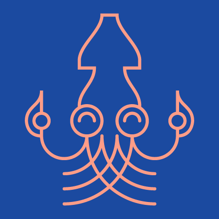
Client |
The Fishy Flop Team |
Role |
UI Designer, Visual Designer |
Tools |
Adobe Illustrator |
Status |
Concept
Fishy Flop is a fin-tastic mobile game by The Fishy Flop Team. The game combines the physics of games like Angry Birds with the quirky controls of games like QWOP.
I ensured that the game featured intuitive interfaces and vibrant, contemporary visuals.
The Fishy Flop Team
- Brian Mah, Lead Developer
- Alex Jungroth, Developer
- Daniel Schlesinger, Developer
- Jordan Henderson, Music, Audio
- Me, Visuals and Interfaces
Samples
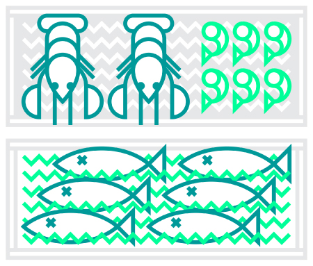 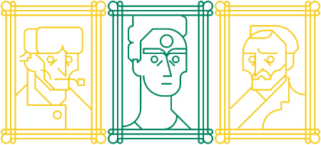 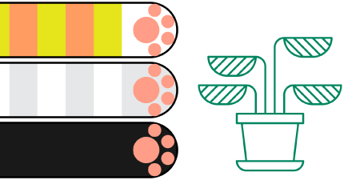Two styles were established to differentiate background and foreground elements.
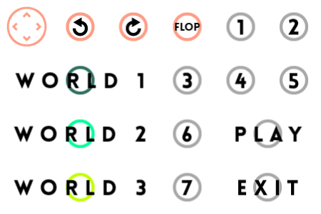 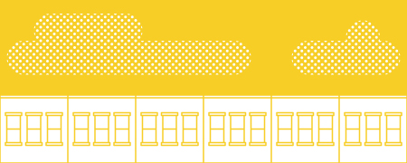 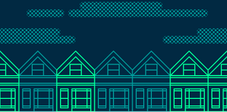 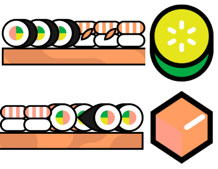 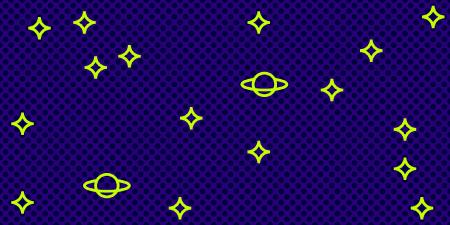 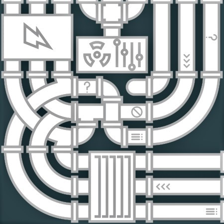
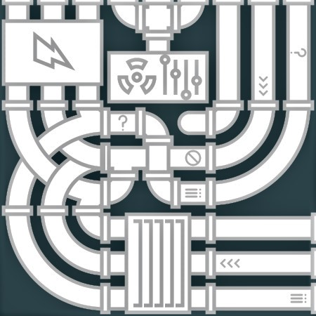
Many elements were designed to be seamlessly tiled.